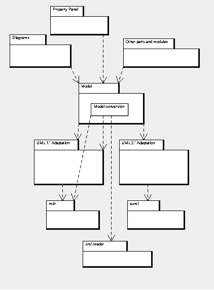

In the ArgoUML project we were hoping that we will be able to take part in Google Summer of Code 2011. The ArgoUML project has taken part before with great success. ArgoEclipse and the Profile handling are essentially student projects.
Unfortunately, ArgoUML was not a chosen organization for 2011.
Project ideas
Reading an UML 1 model into an UML 2 model
ArgoUML is still based on an UML 1.* model while some work has been done to support the euml backend for UML 2. Moving all the way to euml will make ArgoUML compatible with the whole range of euml-based tools i.e. all Eclipse-based UML tools as well as new Diagram types.
Currently this is implemented using two separate backends for ArgoUML.
To allow the ArgoUML Users to move their old models from UML 1 to UML 2 we need a way to read the old UML 1 models from within the UML 2 model backend preserving all the information (element types are changed, texts, relations, Uids, profile connections are preserved...). There is also a need to dig into the differences between UML 1 and UML 2 and decide how incompatible constructs are to be handled.
The diagram shows a possibility for placing the model conversion function and several options for reading the UML 1 model.

UML 2 Graphics
For the drawing of elements in the model, ArgoUML uses GEF (not the one that was a part of Eclipse but the tigris one (http://gef.tigris.org). GEF and ArgoUML stores the graphics in a non-standard way while UML 2 has a standardized ways of storing the graphics.
This project is to explore what it would take to make ArgoUML and GEF to store and read graphics using the standardized format.
Suggested by: Linus Tolke
The Students we are looking for
We are looking for enthusiastic students with a solid knowledge of Java, who are interested in software development tools and modeling, particularly the UML modeling language. A knowledge of UML is not a requirement but a interest and eagerness to learn is.
The projects we are looking for
This page include a list of suggested projects that the development team has thought of, but we are happy to consider projects which are not listed here. Our bug database (Issuezilla) and previous GSoC projects suggestions could be used as inspiration.
For inspiration you could also look at the lists of previous projects:
Please join the developers' mailing list (dev@argouml) to discuss your project with the team so that you can develop the strongest possible proposal for evaluation.
Quick intro of general information in the project
This wiki contains a lot of information on the design of ArgoUML and how we work in the project.
All discussions about the ArgoUML project, the ideas above, and other ideas, are kept at the developers' mailing list dev@argouml.tigris.org that also is available as a discussion forum on this site (at http://argouml.tigris.org/ds/viewForumSummary.do?dsForumId=450). Join the list on the web site and start your discussions there. Your first posting to the mailing list will be manually approved so be patient (usually within 24 hours).